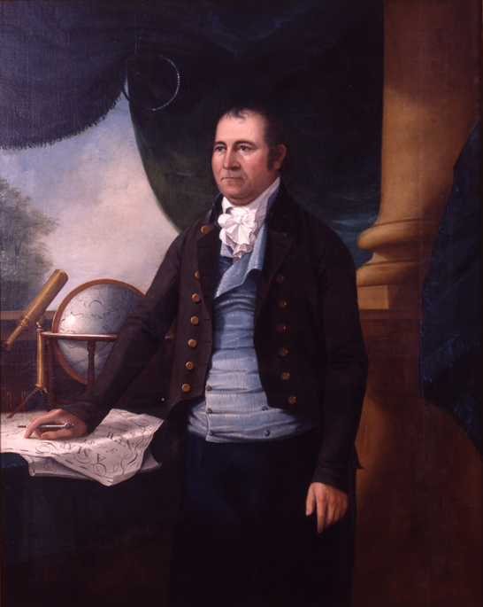
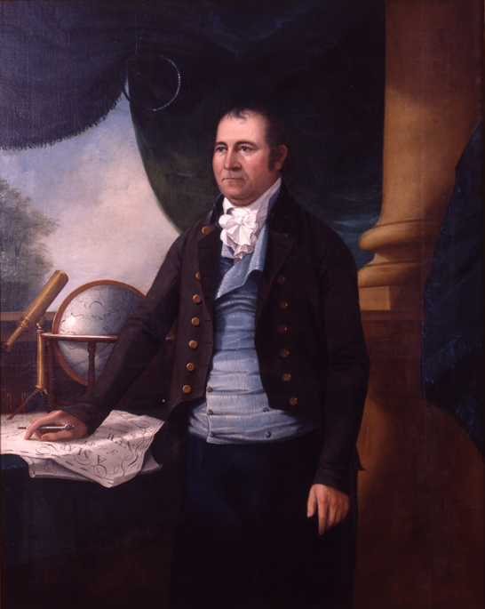

House numbering was not introduced to make people’s orientation easier or to help foreign visitors. At a time when the modern state was taking shape, authorities were bothered with houses being cut off from the public world. A house would remain an obstacle barring tax and military authorities from systematic appropriation of the riches and resources inside unless there was a central addressing system. Even so, houses were not unaddressable before house numbers were introduced. Actually, houses did have addresses – the house names. However, these were not always evident since not every house had a plaque attached indicating its name.
Until the late medieval period there was no great need to give the exact address of a house. In societies where most relations were based on personal acquaintanceship, a person’s name and the estimated indication of a place was all that was thought necessary to find them.
Knowledge of a certain address therefore remained at the local level, confined to the seigneury. State authorities laying claim to the resources harbored in individual houses depended on limited information being made available with the support of seigneurial officials whose interests, how-ever, often ran counter to those of the former. Moreover, even if house names had been visible, and even if there had been a register of house names, a name-based addressing system would nonetheless have posed problems. There were many identical house names, i.e. an object targeted by state authorities might have been missed owing to the confusion of houses because of homonymy.
Anton Tantner, Addressing the Houses: The Introduction of House Numbering in Europe
Anton Tantner, House Numbers: Pictures of a Forgotten History
Before the grid, Manhattan had hills, streams, beaches, ponds, wetlands, rock formations, and cliffs [A]. Building out the grid involved significant reshaping of the land conditions, and although traces of some of these geographical features remain visible, it is only in early prints, and especially the British Headquarters Map, that the geography of the island can be seen.
Between 1790 and 1810, Manhattan’s population tripled to just under 100,000. Driving this population growth was the port economy: during the same period, from 1790 to 1810, the value of exports from New York tripled, putting its revenues well ahead of other American ports.
The Commissioners [B] were charged in 1807 with producing a plan to structure this growth. Transferring the straight lines of the 1811 plan from paper to terrain was a demanding process.
The planners proposed a grid for this future city stretching northward from approximately Houston Street to 155th Street in the faraway heights of Harlem [C]. It was in many respects a heartless plan. There were virtually no parks or plazas. The assumption was that people would gravitate east and west along the numbered streets to the rivers when they wanted open space and fresh air, and not spend time moving north or south. That partly explains why there were only a dozen avenues. New York property values boomed thanks to the grid, which created the real estate market. In 1965 John Reps, an urban historian at Cornell, wrote in “The Making of Urban America” that the city commissioners “were moti-vated mainly by narrow considerations of economic gain.”
This effort was led by John Randel, Jr. over a period of 14 years, from 1807, when the commissioners appointed him as their secretary and surveyor, to 1820, when he completed a detailed atlas of the island. His careful measuring was conducted amid protests and litigation. Randel’s surveyors were regularly obstructed, attacked, and sued for damages for cutting branches to complete their work. Randel himself was often arrested for trespassing.
Museum of the City of New York,The Master Plan of Manhattan
Michael Kimmelman, The Grid at 200: Lines that Shaped Manhattan
In Manhattan, streets run east and west, with the numbers ascending as they move north. The southernmost street is East 1st Street in the East Village, just north of Houston Street. The northernmost is 220th Street in Manhattan’s Inwood neighbor-hood. Farther north, in the Bronx, the street numbers go up to 263. Avenues run north and south, their numbers ascending from east to west. In much of Manhattan, First Avenue runs along the East River, while 12th Avenue, on the other side of the island, runs along the Hudson River, and is also known as the West Side Highway.
Most numbered streets begin with an “East” or “West” signifier, which tells you whether you’re east or west of Fifth Avenue in Manhattan. South of 8th Street, the east and west separator is Broadway, which complicates things by snaking through Manhattan with no respect for the rules.
Odd-numbered streets run west, while even-numbered streets run east. Odd-numbered buildings can be found on the north side of a street, even-numbered on the south, both ascending in the same direction. Each block of a street between two major avenues was assigned a set of 100 numbers. The addresses on the block between Fifth and Sixth Avenues, for example, took the numbers 1 through 99; between Sixth and Seventh Avenues, 100-199; and so on.
Not all address numbers are set in stone, though, as borough presidents have the power to renumber buildings. In the 1980s, with the blessing of future mayor David Dinkins, so-called “vanity” addresses became popular among Manhattan developers. The mundane 111 East 45th Street, 164 West 66th Street and 470 Eighth Avenue, to cite three such metamorphoses, became the more presti-gious 237 Park Avenue [D], 3 Lincoln Center [E] and 12 Penn Plaza [F], respectively.
NYC Streets: How Manhattan Streets and Avenues Are Numbered
Keith Williams, Manhattan’s Confusing Avenue Addresses
As sailmakers, seamstresses, and sugar refiners increasingly crowded these hills [G] — and their names filled the pages of the growing Brooklyn City Directory — developers and homeowners were free to pick their own street numbers for their buildings. These unregulated numbers, combined with duplicated street names, had long made wayfinding in Brooklyn an annoyance, but rapid growth turned the problem into a nightmare. The confusion about both street names and numbers was far from comical, as basic government services like package delivery and police response suffered. The lack of attention and haphazard planning, which occurred disproportionately in poor areas, often Black and Irish neighborhoods, reflected who counted and who didn’t. In predominantly Black neighborhoods, street numbers sometimes didn’t even exist. Then, in 1869, the Renumbering Committee came up with a plan to renumber each block in ascending order, remove duplicate numbers and fractional numbers, and reserve an adequate store of numbers for empty lots. The plan was simple in theory but an enor-mous undertaking: Almost every building would change its number. The committee also determined a list of 75 streets whose names would be changed. Brooklyn never really solved the problem of how to reserve enough whole-number addresses on each block to accommodate future construction, fractional numbers returned on many streets after the renumbering. Today, Brooklyn has the most addresses that end in “A” or “½” of New York City’s five boroughs [H].
Queens was formerly occupied by about 60 villages, each having its own separate system of street names and house numbers. These villages were connected by country roads. Continuity in the street plan was found in only two sections. In 1911, when he was first elected President of Queens Borough, Maurice E. Connolly commissioned the Topographical Bureau to make a thorough study of the problem of connecting these divergent street systems, of widening and straightening the old highways, and of assigning to the streets appropriate names, such as would indicate the portion of the borough in which the highway was located. The change involved the adoption of a numbering system where the term “Avenue” was used to designate highways running east and west, while the word “Street” was employed for those going north and south, or at right angles to the avenues. Streets were numbered consecutively, starting with First Street and finishing with 271st Street. The avenues were also numbered serially, starting with 1st Avenue and ending with 162nd Avenue. The number is divided into two parts, separated by a dash, where the first part of the number is the same as that of the nearest cross street or avenue, intersecting the avenue or street to the west or north, and the second part of the number represents the distance, as expressed in lot intervals, between such corner and the house, a number being assigned for each 20-foot space [I]. Odd numbers are assigned to buildings on the north sides of avenues and the east sides of streets, while even numbers are for houses on the south sides of avenues and the west sides of streets; where the term “street” designates all roads running north and south, and “avenue” refers to roads running east to west or at right angles to the streets.
Jeremy Lechtzin,Brooklyn’s Big Street Address Mess
Charles U. Powell, Bringing Order Out of Chaos in Street Naming and House Numbering

 
